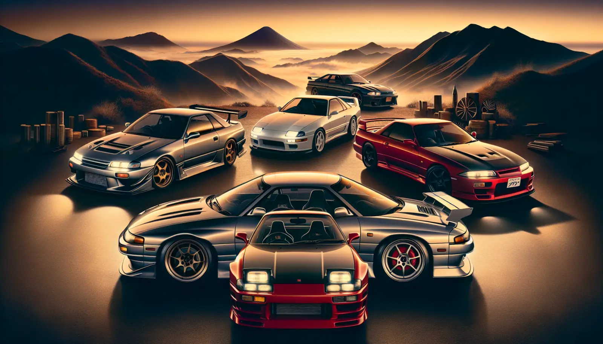

what are JDM cars

The term "Japanese domestic market" ("JDM") refers to Japan's home market for vehicles and vehicle parts.[1] Japanese owners contend with a strict motor vehicle inspection and grey markets. JDM is also used as a term colloquially to refer to cars produced in Japan but sold in other countries. JDM does not necessarily refer to the market that the vehicle is destined for. read more...